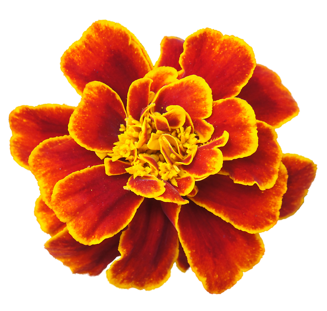

Flowers
What Is A Flower?
|
Flower Classifications
|
Flower Facts
|
What's Your Birth Flower?
Flower of The Month!

October's flower is the marigold. Marigolds are often given as a sign of warm or fierce, undying love, or as a way of saying that you're content with being with the recipient. The other October flower is cosmos, a symbol of order, peace, and serenity.
Flower Businesses in Baton Rouge
<a href="https://data.brla.gov/Business-and-Financial/BR-Flower-Businesses/7nme-bhu5" title="BR Flower Businesses" target="_blank">BR Flower Businesses</a>